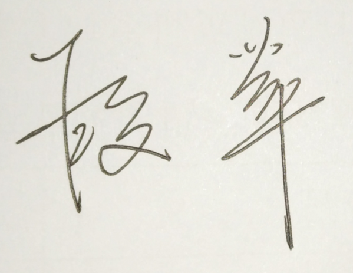

段苹/DuanPing
武汉海关缉私局查私处副处长 Anti-smuggling Bureau of WUHAN Customs
武汉海关缉私局查私处副处长 Anti-smuggling Bureau of WUHAN Customs
Hello, I’m DUANPING!
我叫段苹，现任武汉海关缉私局查私处副处长。我于1992年6月在华中师范大学取得英国语言文学学士学位，后在华中科技大学取得法学硕士学位。本科毕业后，我进入长江航运公安局出入境管理处工作。1999年我被选调入新成立的武汉海关缉私局，工作岗位轮换过办公室、督察处、侦查处、查私处、法制处、缉私科、缉私分局等几乎所有的部门。
Hello, I’m DUANPING!
I’m from Anti-smuggling Bureau of Wuhan Customs. I also have an English name Margaret, which was named by my foreign teacher when I was a sophomore majoring in English 29 years ago in HUAZHONG NORMAL UNIVERSITY. Otherwise, I got the Master’s Degree of Law in HUAZHONG SCIENCE&TECHNOLOGY UNIVERSITY. After my graduation of the bachelor’s degree, I was enrolled by the Public Security Bureau of Changjiang Water-carriage, and served as a foreign-affair-police in the Division of Exit&Entry Administration. In 1999, I was chosen to transfer to the newly-founded Anti-smuggling Bureau of Wuhan Customs, and served as an anti-smuggling police in almost all the divisions like office, supervision, legal affairs, criminal investigation, administrative investigation and in subordinate customs(like the Airport Customs) and subordinate anti-smuggling bureau.

1995年我参加了第四次世界妇女大会主会场的安保工作，对我来说这是一个难得的与联合国安保部一同工作的经历。
I participated in the safe guard of the UN Fourth Conference on Women in the main hall in 1995.And that was a unique opportunity for me to work with the UN Security Department.
2004年我作为会议代表和翻译参加了海关总署在武汉举办的湄公河流域海关合作研讨会。
I attended the seminar of the cooperation and coordination of the customs along River Mekong (which was held in Wuhan by GACC) and acted both as a delegator and an interpreter in 2004.
2015年、2016年，我有幸两次陪同外交部、公安部、总署缉私局的有关领导赴秘鲁开展走私犯罪嫌疑人的引渡谈判，该引渡是中国从美洲成功引渡的第一例。
In 2015 and 2016,I fortunately accompanied several leaders from the Ministry of Foreign Affairs, the Ministry of Public Security and General Anti-smuggling Bureau to negotiate an extradition of a smuggler in Peru. This successful extradition is the first one for China to extradite criminals from the American continent.
经常作为翻译参加武汉海关的外事活动。
I often figure as an interpreter and translator in the foreign affairs of Wuhan Customs.
我是英语学士、法学硕士，专业教育赋予了我处理法律事务的能力，包括使用英语执法。
I majored in English in bachelor’s degree and law in master’s degree. The professional education provided me the capability to deal with legal affairs, even in English.
我的反走私经验丰富，我在缉私局几乎所有的部门都工作过，打击濒危野生动植物走私和“洋垃圾”走私等非涉税走私是我日常工作的重要内容，我对这些领域都很熟悉。
I’m an experienced anti-smuggling police. I have transferred almost all the positions in the anti-smuggling bureau. And anti-smuggling of endangered species of wild fauna&flora and foreign garbage are important tasks in my daily work. I’m familiar with these fields.
我的工作经历训练了我良好的沟通协调能力，而作为业务处分管业务工作的副处长，我也有一定的组织能力。
my experience practiced me much on the skill of communication and coordination. And as the deputy director who is in charge of business, I also have the capacity of organization.
我认为女性更具有亲和力，这将非常有助于我履行职责。
I take it for granted that females are more easy charm. This will help me much in my duty performance.
首先/First of all,
随着中国的迅速发展，中国在很多国际领域都发挥着越来越重要的作用，中国正在展现一个负责任的大国风采。既然环境犯罪是对全人类的犯罪，中国理所应当向世界展示在打击此类犯罪上的努力。国际刑警组织作为仅次于联合国的第二大国际组织，是一个非常好的平台。
With the rapid development, China is playing an important role in many international fields. China is showing the world an image of a responsible great power. As environmental crimes do harm to the whole human beings, it is a matter of course for China to show the effort on the combats of such crimes. And as INTERPOL is the second largest international organization which is just next to UN, it is a good platform.
其次/After that,
走私濒危动植物和“洋垃圾”在中国属于严重犯罪，借助于如国际刑警组织这样的国际组织的力量，我们能做得更好。
Smugglings of endangered fauna and flora and international garbage are serious crimes in China. We can do better with the help of international organizations like INTERPOL.
最后/At last,
既然打击环境犯罪是海关和警方的共同任务，那么，整合作为进出境货物物品监管机构的海关、打击犯罪的警方和保护濒危野生动植物主要力量的CITES等三方的力量，就是一个有益的尝试。
As it is an important task for both customs and police to combat the environmental crimes, it will be a valuable attempt to combine the strength of customs (which is a state organ responsible for the control over inbound and outbound activities through the Customs territory) and police (which is the main strength to combat crimes) and CITES secretariat (which is the most important organization to protect the endangered fauna and flora) on the struggles against the international environmental crimes.
如果我能有幸履职，我将在切实保障国家利益的基础上，充分展现中国作为一个负责任的大国的风采。同时，我也将忠诚履职，为打击国际间环境犯罪做出贡献。
If I'm lucky to resume the duty, the most important matter for me is to show the image of a responsible great power based on the rights and interests of the state. Then I shall fulfill my responsibility faithfully and do my best to devote to the fight against international environmental crimes.